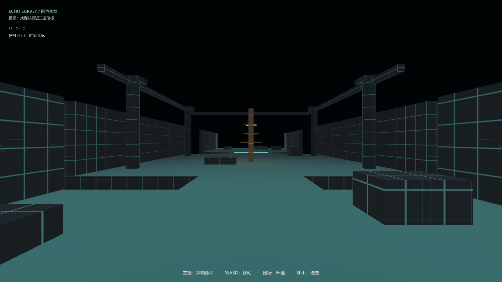
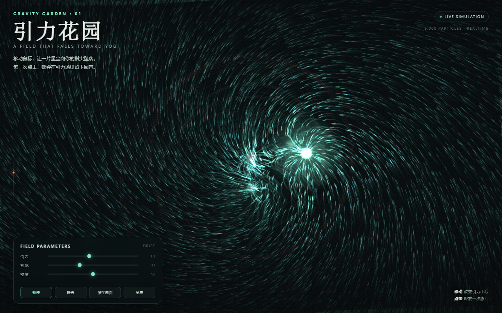
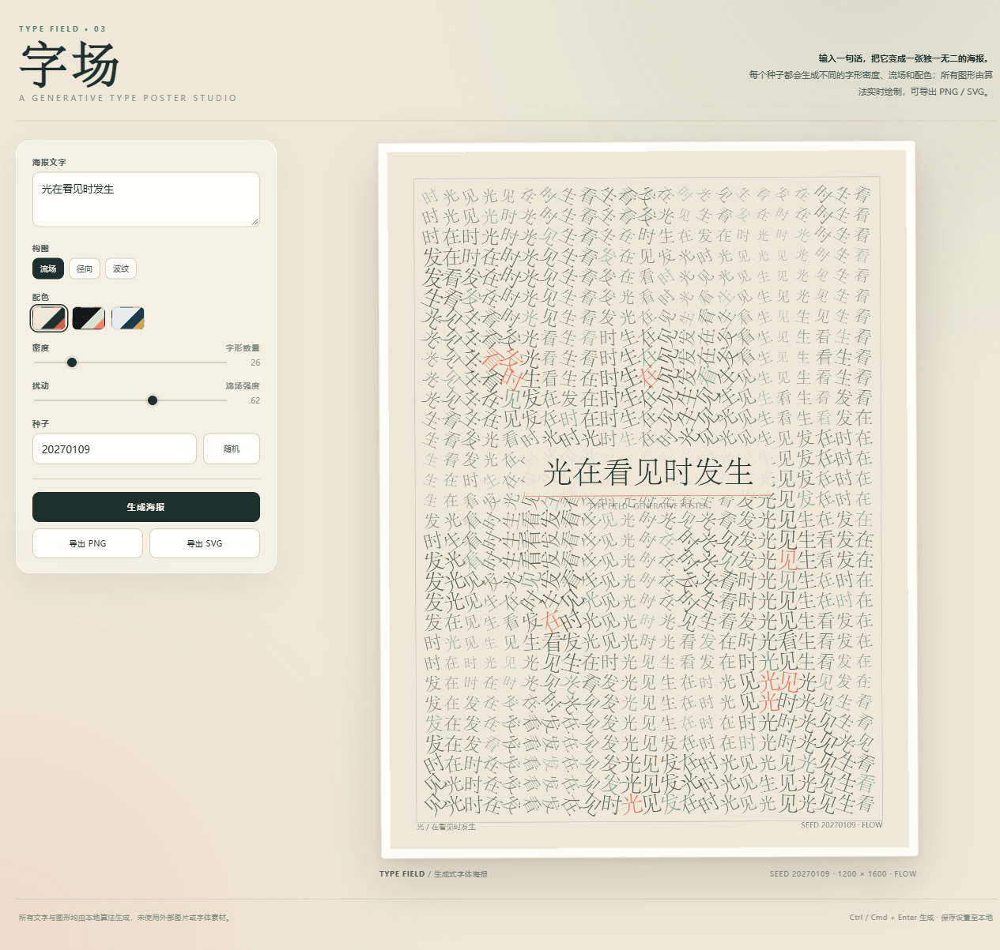

三个从零完成的原创作品：一个用声音测绘黑暗的 Unity 第一人称体验，一个实时粒子引力场，以及一个生成式字体海报工具。它们分别回答三个问题：空间如何被感知、秩序如何从混沌里长出来、文字如何变成图像。

一个没有光的测绘场。左键发出声呐脉冲，实时 shader 让建筑的轮廓随波前显形；找到三座信标，把空间从黑暗里一点点“听”出来。

9,000 个粒子组成的实时引力场。鼠标是唯一的引力源；点击释放脉冲，让星尘在指尖周围形成旋涡。

输入一句话，生成一张独一无二的字体海报。流场、径向、波纹三种构图，种子驱动，可导出 PNG 与 SVG。
三个作品都不是教程复刻：每个都先定义一条核心规则，再围绕规则做交互与视觉。回声测绘把“看见”换成“听见”；引力花园把物理模拟变成可触摸的星尘；字场把排版变成可生成的系统。
Unity 6 / C# / HLSL：实时脉冲着色、角色控制、程序化音频。
HTML / Canvas 2D / Web Audio：粒子系统、实时音频合成、导出。
没有使用游戏模板或第三方玩法代码。
《引力花园》《字场》直接打开即可交互；《回声测绘》提供 Windows 构建下载。建议全屏、戴耳机观看。